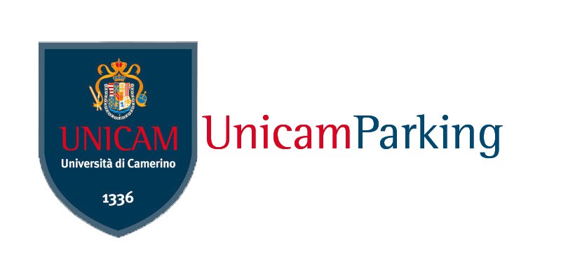

UnicamParking


Registrati su UnicamParking e prenota il tuo parcheggio così potrai godere dei vantaggi in tutte le sedi Unicam
Programma creato e sviluppato da: Ludovico Latini e Yuri Monti, per il progetto del corso di Progettazione di Applicazioni Web e Mobile tenuto dal
Professor. Diego Bonura.
login o registrati